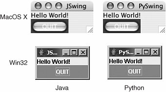

23.3. Python and Java Programming with Jython23.3.1. What Is Jython?Jython is one of those tools that can unite two diverse programming populations. For one, it caters to Python programmers embedded in a Java development environment and gives them the ability to rapidly prototype solutions that seamlessly integrate into an existing Java platform. Another reason is that it helps simplify the lives of millions of Java programmers out there by giving Java a scripting language environment. No longer do Java programmers have to write a test harness or driver application to simply test a class they have just written. Jython gives you most of what Python has to offer along with the ability to instantiate and interact with Java classes too! Jython code is dynamically compiled into Java bytecode, plus you can extend Java classes in Jython. You can also extend Python using Java. It is quite easy to write a class in Python and then use it as a Java class. You can always statically compile a Jython script into Java bytecode. Jython can be downloaded from the book's Web site or at http://jython.org. After installation and seeing some default startup notices of processing new .jar files, starting up Jython's interactive interpreter looks eerily like you're using Python. And yes, Virginia, you can still do the same old "Hello World!" in Python: $ jython
Jython 2.2a1 on java1.4.2_09 (JIT: null)
Type "copyright", "credits" or "license" for more
information.
>>> print 'Hello World!'
Hello World!
>>>
>>> import sys
>>> sys.stdout.write('Hello World!\n')
Hello World!The only difference is that you now have (to wait for) Java's long startup time. Once you have accepted that inevitability, you can move on to greater things. The more interesting thing about the Jython interactive interpreter is that now you can do "Hello World!" using Java(!): >>> from java.lang import System >>> System.out.write('Hello World!\n') Hello World! Java gives Python users the added bonuses of native exception handling (not available in standard Python, or "CPython" as it is called, when being referred to among other implementations) as well as use of Java's own garbage collector (so Python's did not have to be [re]implemented for Java). 23.3.2. Swing GUI Development (Java or Python!)By having access to all Java classes, we have a much broader universe of what is possible. One example is GUI development. In Python, we have the default GUI of Tk via the Tkinter module, but Tk is not a native Python toolkit. However, Java does have Swing, and it is native. With Jython, we can actually write a GUI application using Swing components ... not with Java, but using Python. A simple "Hello World!" GUI written in Java followed by its equivalent in Python is given in Examples 23.7 and 23.8, respectively, both of which mimic the Tk examples tkhello3.py found earlier in the GUI programming chapter. These programs are called swhello.java and swhello.py, respectively. Example 23.7. Swing "Hello World" in Java (swhello.java)
Example 23.8. Swing "Hello World" in Python (swhello.py)
The code for both matches that of tkhello3.py except they use Swing instead of Tk. The hallmark of the Python version is the significant reduction in the number of lines of code necessary to do the same thing in Java. The Python code is more expressive, with each line of code having more significance. In short, there is less "white noise." Java code tends to have a lot more boilerplate code to get work done, while Python lets you concentrate on the important parts of your application: the solution to the problem you are trying to solve. Since both applications are compiled to Java bytecode, it is no surprise that both applications look exactly alike when executing on the same platform (see Figure 23-8). Figure 23-8. Swing Hello World Demonstration Scripts (swhello.{java,py}) Jython is a great development tool because you get the expressiveness of Python plus the rich API in the Java libraries. If you are a current Java developer, we hope that we have whet your appetite in terms of what you can now do with the power of Python behind you. If you are new to Java, Jython will be able to ease you in gently. You can prototype in Jython, then port easily to Java as necessary. |